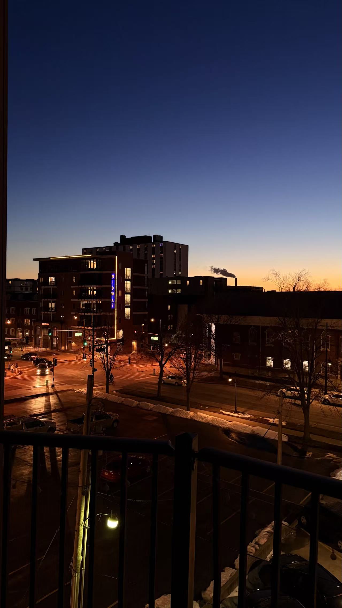
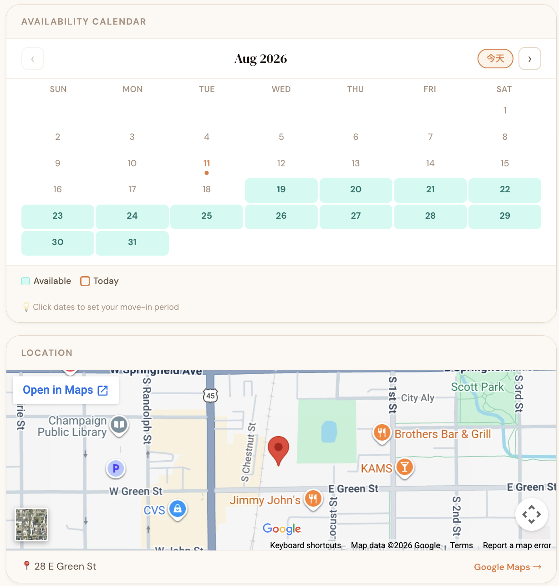
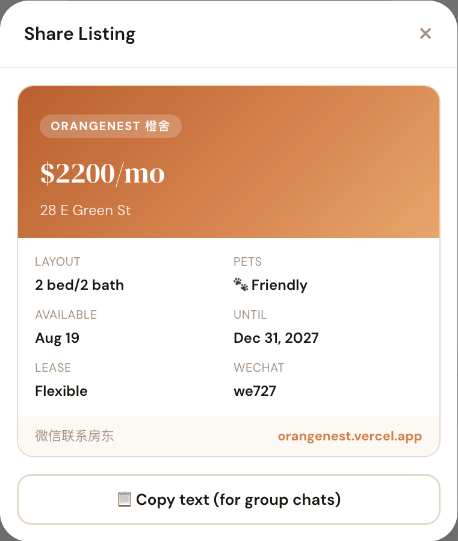

ORANGENEST
橙舍
A sublease platform for UIUC international students. Real listings, direct WeChat contact, and filters for what actually matters — including pets.
It started with a real emergency
A friend needed short-term housing near UIUC on short notice. I spent hours making calls, adding strangers on WeChat and refreshing Xiaohongshu — at 1pm US time, while every contact in China was still asleep.
"We eventually found a place because someone happened to see our wanted post and reached out. Luck is not a product."
The problem was not a lack of housing, or a lack of people wanting to sublease. It was that neither side had a reliable place to find the other quickly. That gap is what OrangeNest closes.

Six problems stacked into one impossible search
Searching at 1–2pm US time means contacts in China are not awake yet. For a last-minute need, a few hours is the difference between finding housing and not.
"I'll check for you." "Add me on WeChat." Every agent had a version of this; none followed through. The problem was not the absence of agents — it was having no way to know which one would deliver.
Xiaohongshu meant constant searching and manual filtering, with no indication of availability. Finding a listing meant another round of WeChat before anything was confirmed.
Most platforms carry long leases. Agents confirmed it: for a stay of about a month, sublease is the only real option. The need was not "find an apartment" but "find someone leaving who will hand over their lease."
My friend has a cat. A listing that looked perfect on every other dimension could still fall through at the last step. That filter had to be up front, not buried in a conversation.
The real problem: nowhere to see which subleases are available right now, with move-in date, end date, price, pet policy and direct contact all visible up front.
This was not a housing problem. It was a last-minute matching problem. Supply and demand existed at the same time — they just had no shared, reliable place to meet.
Every choice came from the search itself
I did not run formal interviews here — the research was my own experience. Being the person with the need made the requirements unusually clear: I knew exactly what I had to see before deciding to contact someone.
Orange is UIUC's primary color, so the association is immediate. The palette runs warm and residential rather than corporate — closer to high-end real estate than a generic rental app. Type is DM Serif Display with DM Sans.
This is how the UIUC Chinese student community already talks. Adding another messaging layer would recreate the exact friction the platform exists to remove.
Address, price, available from and to, occupancy dates, pet policy, urgency flag — enough to decide whether it is worth contacting, without clicking through.
Most sublease platforms ask for too much up front. Three steps keeps the barrier low enough that someone with a lease to hand off actually posts instead of abandoning the form.
Every screen, shown in full



Someone recommended it back to me
After I posted a demo video on Xiaohongshu, a student I had contacted during my own search reached out — not knowing I had built it. He forwarded my own video to me, said it looked useful, that a UIUC student made it, and that I should check it out next time I needed housing.
He had a unit available but was back in China, trying to sublease it quickly. We had spoken before and could not agree on price and dates. He had no idea he was recommending my own product to me.
That confirmed two things: the problem is real enough that people recognize the solution when they see it, and the gap between supply and demand exists on both sides at once.
Learned the stack by building it
I used this project as the context for learning Supabase — the listings table, row-level security policies, a public storage bucket for photos. Front end is HTML and CSS, deployed on Vercel. The stack was chosen to minimize cost and maximize iteration speed; at current scale the whole platform runs for free. A Figma prototype of a housing platform is an argument. A deployed platform with a working database is evidence.